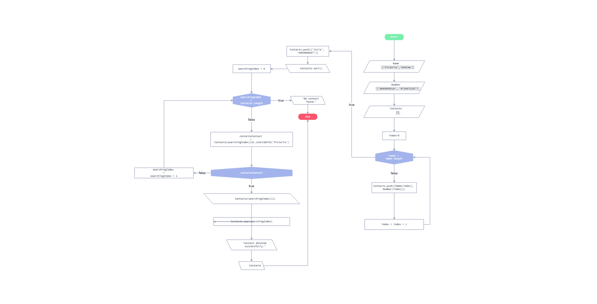

Features
Review an organisation’s IT Code of Conduct
It is evident that data protection rules are pertinent in modern society. Technological advancements are thriving, where technology not only plays a huge role in our personal lives, but impacts our surrounding environment and society as a whole (European Commission, 2019). Consequently, certain rules and procedures need to be rooted in an organisations code of conduct. Data security is vital in order to protect an individuals right's in a forever growing digital society. The General Data Protection Regulation (GDPR) is a EU directive that provides a framework for companies to protect and ensure the ethical use of personal data.
learn more
For instance, In 2019, a fine was imposed on Poland for the infringement of the General Data Protection Regulation (GDPR). This is because a data broker company failed to “inform individuals that their data was being processed” (European Commission, 2019: 5). Individual’s data was being obtained without their consent from public registers, such as their postal and email address. It was also found that the informational clause that was displayed on the company’s website was inadequate, as data subjects had not consented to the exposure of their contact details and processing of their data (European Commission, 2019: 5). The situation could have been improved by informing individuals whose personal data they were going to process, who it was going to be shared with and how it was going to be used.
I am currently permanently employed by a software company, Dynamic Visual Technologies (DVT). DVT outsources their employees to clients and I have been based at Nedbank, a popular bank in South Africa, where I am required to provide design solutions for the forex online banking industry. I believe that Nedbank has a secure infrastructure and recently communicated the following message with their clients: “The Protection of Personal Information Act (POPIA) is now in full effect and aims to ensure that you are fully aware of how your personal information is being used and that it is adequately protected from misuse, loss and unauthorised disclosure” (Nedbank, 2021). As a UX/UI designer I have to ensure that my designs follow certain rules and regulations regarding people’s personal information. For instance, we create designs that inform users of why we need certain documents or information and how their data will be processed. I fortunately have not been exposed to an incident where data has been exposed.
Nevertheless, the breach of data in the banking industry is definitely problematic. For instance, someone's bank account could be hacked into and they could lose their money or they could commit fraud by pretending to be someone else. On top of this, cloud computing is susceptible to hacking and this could result in the breach of private data. Additionally, Nedbank employees constantly make use of a virtual environment to store work and access it from anywhere. Thus, it is essential that computer professionals are constantly monitoring and updating their security system to ensure their platform is secure. Altogether, computing professionals play a very important role when it comes to protecting their clients privacy.
I believe all companies should be focused on “improving the level of protection for the data of individuals” (European Commission, 2019: 11). Taking this into account and based on the General Data Protection Regulation; we are able to see how relevant data protection is in the EU. The regulation highlights the significance of business’s protecting data in the digital economy. This is because business’s that implement strategies to protect their data are able to improve their security measures and develop a more trusting relationship with their customers. Overall, introducing data protection regulatory rules within a company will enhance their commitment to their legal obligations (European Commission, 2019).
References
1. European Commission. (2019) Data protection rules as a trust-enabler in the EU and beyond – taking stock. COMMUNICATION FROM THE COMMISSION TO THE EUROPEAN PARLIAMENT AND THE COUNCIL 374(1): 1-19. Available from: https://eur-lex.europa.eu/legal-content/EN/TXT/PDF/?uri=CELEX:52019DC0374&from=EN [Accessed 18 August 2021].
2. Dabrowska, K & Nowak-Blaszczak, A. (2019) Poland Has Imposed The First Fine For Infringement Of GDPR. Available from: https://www.mondaq.com/data-protection/796084/poland-has-imposed-the-first-fine-for-infringement-of-gdpr [Accessed 18 August 2021].
3. Nedbank. (2021) Nedbank CIB respects your privacy and is committed to keeping your personal information secure and confidential. Available from: https://www.mondaq.com/data-protection/796084/poland-has-imposed-the-first-fine-for-infringement-of-gdpr [Accessed 18 August 2021].
Explore AI tools developed by Google
Google AI is a learning platform and is a space where anyone can gain access to resources that involve technology when trying to find a solution to a problem. he platform contains numerous activities, podcasts, courses, guides and basically anything that can help you learn more about artificial intelligence. Overall, Google AI provides an enormous amount on content and provides a great opportunity to gain further knowledge and advance your skills. So far, I have interacted with and read the “AI for Social Good Guide” and found it incredibly informative.
Review Google Translation
Google translate is a platform that allows you to translate one language into another. It is an effective tool when wanting the direct translation of a single word or a simple sentence. However, the platform is sometimes unable to correctly translate complex sentences. This is because grammar and sentence structure are vastly different for different languages.
Introduction into HTML
I completed DVT’s graduate programme, where I received training in basic software development. This is an example of an HTML page I created. It includes Javascript training implementation of a countdown timer. A single page that displays a countdown timer to a predefined event (Christmas 2020) This is a static page with no user interaction. Please click on the following link Christmas Countdown
Draft Submission: An outline of the final module essay assessment
The Importance of Human Behaviour and Cognition when engaging with Artificially Intelligent Machines in the Healthcare System
The field of computer science has embraced creativity, which has resulted in life changing technologies. Certain technological advancements have made the impossible, possible. For instance, a Robotics company, ReWalk have innovatively combined technology and medicine to develop ‘a battery-powered robotic exoskeleton’ that helps mobilise individuals with lower limb disabilities (Andrews, 2017). Undoubtedly, these technological developments are changing the way humans behave and understand our digital age. Our current lifestyle is governed by abstractions and algorithms, which provide technical solutions to problems in order to make our lives easier.
learn more
Artificially intelligent robots are independent machines that behave intelligently by engaging and learning from their external environment. In the healthcare system, AI plays a role in how we diagnose and treat illness (Banks, 2018). ReWalk, an FDA approved company, is primary example of how we can use technology to improve the quality of life for those who have had a stroke or a spinal cord injury. ReWalk provides the use of an exoskeleton as an alternative to a wheelchair. It allows a disabled individual to stand and walk based on a sensor placed in the patient’s shoe, along with the assistance of a handheld smartphone controller that detects their bodies movements. ReWalk believes their product is more cost effective and requires less data storage than its competitors (ReWalk, 2021).
Technological trends in popular culture are seen as both advantageous and destructive. Evidently, technologies role in the health system, specifically AI, is paramount. Although, artificial intelligence supports humankind, many people remain sceptical of long term ramifications. Further investigation is needed to understand user satisfaction regarding the success of technologies, such as exoskeletons. Questions need to be raised pertaining to a user’s quality of life and whether the benefits out way any adverse effects. (Platz, 2016) Thus, human-robot interaction raises social concerns, particularly that of safety, trust and overall well-being.
Prof. Nick Bostrum of the Future of Humanity Institute at Oxford University, believes that “AI could overtake human capability by 2045.” With particular reference to the healthcare system, nursing is a primary example of how a machines could monitor a patient at a quicker and more accurate level than any human being. Nevertheless, machines struggle to display the empathy and provide the human connection patients require. Human intuition is what distinguishes us from machines. Humans have the ability to solve problems based on mental processes, whereas artificially intelligent machines make decisions based on data gathered from their surroundings. Consequently, human cognition and judgment remain vital when engaging with artificially intelligent machines.
We have a social responsibility to engage in ethical discussions as artificially intelligent machines advance. Mark Coeckelbergh, a Computer Science professor at the University of Vienna, Switzerland believes that ‘collaboration could be the way forward,’ as humans have the ability to think creatively when tackling a problem, but a machine can provide rational assistance (Banks, 2018). As technology progresses, we need to become more cognitively aware of abstract tools, such as ReWalk’s exoskeleton and how it impacts human behaviour and thought.
References
1. European Commission. (2019) Data protection rules as a trust-enabler in the EU and beyond – taking stock. COMMUNICATION FROM THE COMMISSION TO THE EUROPEAN PARLIAMENT AND THE COUNCIL 374(1): 1-19. Available from: https://eur-lex.europa.eu/legal-content/EN/TXT/PDF/?uri=CELEX:52019DC0374&from=EN [Accessed 18 August 2021].
2. Dabrowska, K & Nowak-Blaszczak, A. (2019) Poland Has Imposed The First Fine For Infringement Of GDPR. Available from: https://www.mondaq.com/data-protection/796084/poland-has-imposed-the-first-fine-for-infringement-of-gdpr [Accessed 18 August 2021].
3. Nedbank. (2021) Nedbank CIB respects your privacy and is committed to keeping your personal information secure and confidential. Available from: https://www.mondaq.com/data-protection/796084/poland-has-imposed-the-first-fine-for-infringement-of-gdpr [Accessed 18 August 2021].
▲
Assignment One: Part One
An algorithmic solution for a contact book application
Algorithms are a set of instructions that can be understood by human beings and are executed by a computer when trying to solve a problem (Bullinaria, 2019). Algorithms incorporate data structures to help a computer effectively perform a certain task. The following algorithm is implemented using a flowchart/pseudocode and represents a contact book application. The objective of a contact book is to insert an individual’s contact details, organise their information in alphabetical order, search for a desired individual and finally provide the ability to delete an existing contact.
learn more
The role of data structures
There are two different types of data structures: primitive data structures and compound data structures. Simple data structures comprise of universal data types, such as integers and characters. Compound data structures consist of more complex data types, such as arrays. Furthermore, compound data structures can be arranged in a linear or non-linear manner. Linear data structures are used to store data in a programs memory in the form of queues and stacks. Alternatively, non-linear data structures are organised in the form of trees that are connected by branches and assembled as a collection of data (Glenn Brookshear & Brylow, 2019).
The following flowchart is a visual representation of an algorithm that is designed to execute tasks associated with creating a contact book.

Test Plan
The algorithm’s structure comprises of the following:
1. An input block displays an entry variable, ‘Name’, which is made of up of an array of strings.
2. A second input block is an entry variable, ‘Number’, which is made of up of an array of strings.
3. A third variable, ‘Contacts’ is created and is made up of an empty array.
4. Introduce an operation that sets our counter to 0.
5. A Boolean expression is created to determine whether the condition is true or false.
6. If the statement is false, it activates a continuous loop to run the program until all the elements have been executed based on the length of the array, ‘Name’.
7. An output block displays a push method, forcing the creation of a new array consisting of both the name and number of an individual, separated by a comma.
8. An operation block is created to continue the loop counter by an increment of 1 and allow the program to continue running.
9. The process repeats until the condition returns a value of true.
10. If true, the push method is used to create an additional contact.
11. After the creation of a new contact, the sort method arranges the targeted data into alphabetical order, which is displayed in the console.
12. Introduce an operation that sets the search operation to begin at the first occurrence in the array.
13. The boolean operated is created to determine whether the condition is true or false and is initiates the program to run in a loop until it reaches the number of contacts saved in the database.
14. If true, a message will display in the console informing the user that the contact has not been located.
15. If false, the creation of a new variable “containsContact” is created and stores certain values that enable the program to search for the first index in an array containing the words, ‘Victoria’.
16. A condition is created where the decision is made as to whether or not ‘Victoria’ is found at index 0.
17. If false, an operation is executed to continue the loop counter and increase it by an increment of 1.
18. The loop continues until it has gone through the entire contact list.
19. The condition becomes true once the program has found ‘Victoria’ amongst all saved contacts. It then returns the number associated with the searched contact in the console.
20. Once the contact has been found, the pop method is executed to delete the desired contact, according to its index position in the array.
21. A message is then displayed in the console informing the user that their contact has been deleted successfully.
22. An output block displays the remaining contacts in the console.
23. The program comes to an end.
In conclusion, software design is instrumental when solving a problem (Xinogalas, S). It provides a visual representation of an algorithmic process that can be executed by a central processing unit using different programming languages. Overall, the purpose of the application is to store and manipulate data whilst following a set of rules to complete a task.
References
1. Bullinaria, J. (2019) Data Structures and Algorithms. Birmingham, UK: School of Computer Science University of Birmingham. Available from: https://www.cs.bham.ac.uk/~jxb/DSA/dsa.pdf [Accessed 1 October 2021].
2. Glenn Brookshear, J. & Brylow, D. (2019) Computer Science: An Overview. 13th ed. United Kingdom: Pearson Education Limited. Available via the Vitalsource Bookshelf. [Accessed 1 October 2021].
3. Xinogalos, S. (2013) ‘Using flowchart-based programming environments for simplifying programming and software engineering processes’, 2013 IEEE Global Engineering Education Conference (EDUCON).The Technical University of Berlin, 13-15 March 2013. Greece: University of Macedonia. 1313-1322.